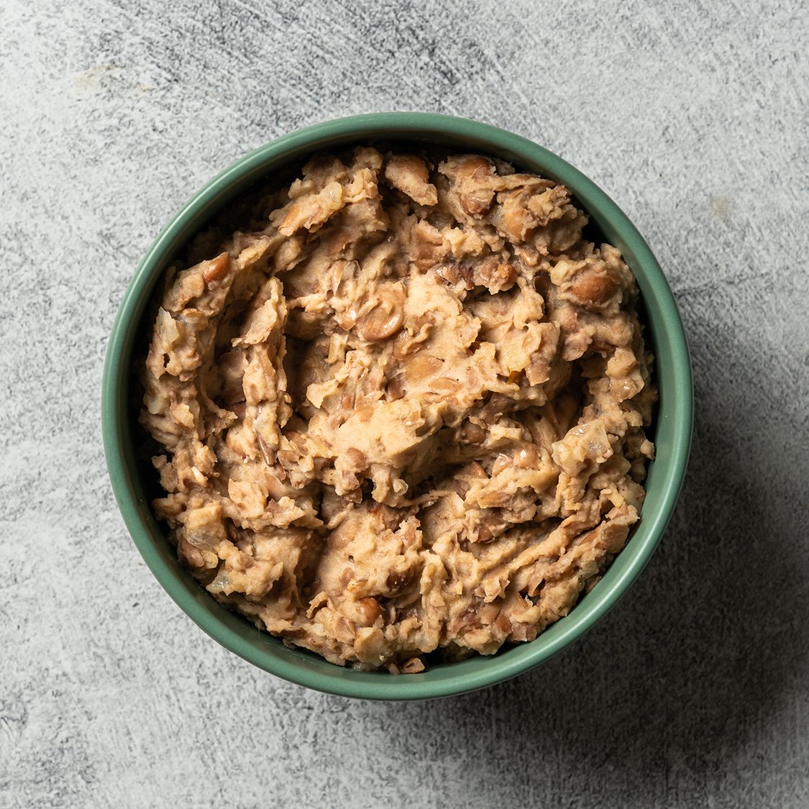

Refried Beans

Description
Refried beans are a super easy dish to make that I can never get right! I can make a strudel without a hitch but somehow getting the flavor right with some mashed up pinto beans is just too much to ask from me. You too can enjoy the frustration of spending a whole day thinking about your beans only to find out that they are yet another disappointment!
Ingredients
- 1 lb (16ozs) Pinto Beans
- 1 Onion
- 2 Garlic Cloves
- Some salt
- 6 cups of water
- 2 tbsps Oil
Steps
The night before
- Rinse the beans
- Soak the beans overnight. Have the water reach about two knuckles above the top of the beans
The day of cooking
- Peel and quarter the onions
- Smash the garlic cloves (or dice, I don't care)
- Strain the beans from from wherever they were soaking
- Place beans, onion, garlic, and the 6 cups of water into a large pot and set heat to high
- Once water is boiling, set heat to low, add salt, stir, cover pot, and wait 30 minutes
- Stir the contents of the pot again and 30 minutes to 1 hour until beans are very soft
- Heat oil in a large skillet
- Ladle beans onto skillet and begin to mash/ fry
- Add bean broth to skillet for desired consistency
- Once desired consistency is met, enjoy!
- Google how to clean a skillet because you always are worried you'll do it wrong